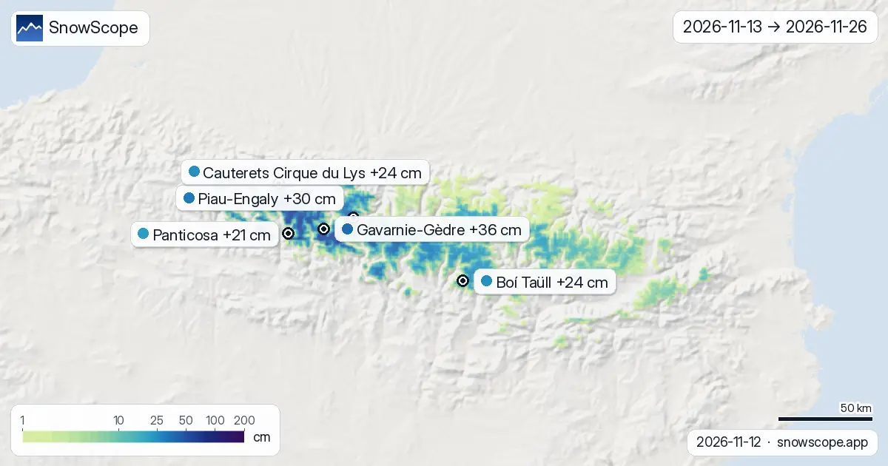

Lohnt sich Grandvalira im Dezember, wenn du sparen willst?
Andorra gilt als günstiges Skiziel – ist Grandvalira also eine gute Wahl für Dezember? Unsere Schneehistorie aus 46 vergangenen Wintern (1980-81 bis 2025-26) zeigt: Unten ist der Naturschnee den ganzen Monat dünn, und Anfang Dezember ist unsicher. Die Reise lohnt sich Ende Dezember, oben am Berg, mit einem online gekauften Pass.
Die Live-Schneeprognose für Grandvalira in der SnowScope-AppSchneehöhen, Pulverschnee-Alarme und 3D-Karte, gratis.Das Versprechen gegen die Schneezahlen
Grandvalira in Andorra ist groß: Das kartierte Skigebiet hat 137 km Pisten und 53 Lifte zwischen 1.674 m und 2.619 m. Das klingt beruhigend, bis du dir in unserer Schneehistorie den Naturschnee nach Höhe ansiehst. Unten an den Liften, auf 1.674 m, liegen in einem üblichen Dezember 9 cm; ein schneearmer Dezember, 1 Winter von 10, liegt nahe 0 cm, ein schneereicher über 28 cm.
Auf mittlerer Höhe bei 2.146 m liegt der übliche Dezember-Schnee bei 27 cm, mit einer Spanne von unter 2 cm in einem schneearmen Winter bis zu über 63 cm in einem guten Winter. Ganz oben auf 2.619 m liegt die übliche Dezember-Höhe bei 45 cm, von unter 5 cm in 1 von 10 Wintern bis zu über 101 cm in einem sehr schneereichen Winter. Die übliche Schneehöhe am 15. Dezember beträgt 8 cm an der Basis, 25 cm auf mittlerer Höhe und 42 cm am Gipfel.
Am 13. November liegt die Schätzung bei 0 cm auf allen drei Höhen, mit 0 cm Neuschnee in den nächsten 7 Tagen an der Basis und auf mittlerer Höhe sowie 3 cm am Gipfel. Die Zwei-Wochen-Prognose bis zum 26. November für die mittlere Höhe und darüber liegt zwischen 2 und 17 cm, mit 10 cm im Durchschnitt, was einen langsamen Saisonstart zeigt.

Welche Dezemberwoche bringt dir Schnee
Die wöchentlichen Anteile zeigen, warum der frühe Dezember ein Glücksspiel für vorsichtige Skifahrer ist. An der Basis auf 1.674 m erreicht der Schnee in nur 2 % der vergangenen Winter vom 1. bis 7. Dezember 30 cm oder mehr, und in jeweils 7 % in den drei folgenden Wochen, während 50 cm oder mehr den ganzen Monat über in 0 % der Fälle vorkommen. Auf mittlerer Höhe bei 2.146 m kommen 30 cm oder mehr in 30 %, 41 %, 50 % und 65 % der vergangenen Winter in diesen vier Wochen vor.
Die Bergstationen auf 2.619 m sind dort, wo der Dezember später zuverlässiger wird. Vom 1. bis 7. Dezember liegen in 43 % der Winter 30 cm oder mehr und in 28 % über 50 cm. Vom 8. bis 14. Dezember steigen diese Anteile auf 57 % und 39 %, dann auf 63 % und 48 % vom 15. bis 21. Dezember und auf 76 % und 63 % vom 22. bis 28. Dezember.
Was der Skipass wirklich kostet
Für Montag, den 14. Dezember 2026, listet die offizielle Seite von Grandvalira einen 1-Tages-Pass für Erwachsene (18-64) bei Online-Kauf für 62,50 EUR, während der Preis an der Tageskasse 72,00 EUR beträgt. Die Preise ändern sich je nach Datum, daher macht das frühe Prüfen und Online-Kaufen einen deutlichen Unterschied. Andere Reisekosten wurden nicht geprüft, daher garantiert ein günstigerer Pass allein keinen Billigurlaub.
Grandvalira im Vergleich zu Baqueira Beret
In Spanien bietet das Skigebiet Baqueira Beret 154 km Pisten und 36 Lifte von 1.504 m bis 2.600 m. Dennoch hat Grandvalira im Dezember im Schnitt mehr Naturschnee über das gesamte Gebiet. Die übliche Dezember-Tiefe in Baqueira beträgt 8 cm an der Basis, 20 cm auf mittlerer Höhe bei 2.052 m und 30 cm am Gipfel bei 2.600 m. Auf mittlerer Höhe erreicht Baqueira in den vier Dezemberwochen in 22 %, 30 %, 35 % und 41 % der vergangenen Winter 30 cm oder mehr. Am Gipfel erreicht es in 39 %, 46 %, 52 % und 59 % der Winter 30 cm oder mehr und in 13 %, 22 %, 30 % und 37 % der Winter 50 cm oder mehr.
Für die Saison 2026-27 listet die offizielle Seite von Baqueira Beret ein 1-Tages-Baqueira-Ticket für Erwachsene für 74,00 €, ein 1-Tages-Pass mit der aufladbaren Baqueira-Pass-Karte für 70,00 € und ein 6-Tages-Baqueira-Ticket für 359,00 €. Der geprüfte Online-Preis von 62,50 EUR für Grandvalira am 14. Dezember ist niedriger als die 1-Tages-Preise von Baqueira Beret. Der Kassenpreis von 72,00 EUR bei Grandvalira liegt jedoch dazwischen, und die Preise bei Grandvalira ändern sich je nach Datum.
Sind die letzten Dezember dünner als früher
Vergleicht man die ersten 15 Winter (1980-81 bis 1994-95) mit den letzten 15 Wintern (2011-12 bis 2025-26), blieb der Durchschnitt Mitte Dezember bei 8 cm an der Basis, stieg von 21 cm auf 25 cm auf mittlerer Höhe und von 35 cm auf 41 cm am Gipfel. Dennoch lag der Dezember des letzten Winters 2025-26 unter diesem jüngsten Durchschnitt, mit 8 cm an der Basis, 19 cm auf mittlerer Höhe und 32 cm am Gipfel. Die Schwankungen von Jahr zu Jahr bleiben groß: 1989-90 fiel auf 1 cm sowohl auf mittlerer Höhe als auch am Gipfel, während 1996-97 35 cm, 82 cm und 129 cm erreichte.
Tipps für Skifahrer
- Ziele auf den 22.-28. Dezember, wenn du kannst, da der Gipfel auf 2.619 m in 76 % der vergangenen Winter 30 cm oder mehr und in 63 % 50 cm oder mehr erreicht.
- Plane dein Skifahren zwischen 2.146 m und 2.619 m, da die Basis auf 1.674 m im üblichen Dezember nur 9 cm im Schnitt hat.
- Buche deinen Skipass auf der offiziellen Seite von Grandvalira, um 62,50 EUR statt 72,00 EUR für den 14. Dezember zu zahlen, und prüfe die Preise für deine genauen Daten.
- Prüfe den Lawinenbericht vor jedem Off-Piste-Skifahren, besonders wenn die Schneedecke Anfang Dezember dünn ist.
Weitere Karten (externe Seiten)
Quellen und Nachweise
- Grandvalira, official ski pass booking (online price for 14 December 2026, read 2026-11-13) www.grandvalira.com/en/ski-pass/day
- Baqueira Beret, official prices (tarifas), season 26-27 www.baqueira.es/es/tarifas
- SnowScope, December snow at three heights and today's snow map snowscope.app/
Zu diesen Zahlen
Schneewerte: SnowScope-Schneehistorie, 46 vergangene Winter (1980-81 bis 2025-26) auf drei Höhen jedes Skigebiets (ein höhenkorrigiertes Modell der Vergangenheit: eine Schätzung für eine Fläche, keine Messungen des Skigebiets); Dezemberwerte aus den täglichen Schneehöhen dieser Winter. Aktueller Schnee und Zwei-Wochen-Ausblick: SnowScope-Prognosen (Ausblick aus ECMWF und GFS, eine Spanne, kein Versprechen). Lifte und Pisten: OpenSkiMap-Kartierung. Preise: die offiziellen Seiten unten, gelesen am 2026-11-13; Preise können sich ändern, vor der Buchung prüfen.
Offizielle Lawinenlageberichte: Servei Meteorològic Nacional d'Andorra – Estat de la neu
Diesen Bericht zitieren
Für Forschung, Lehre oder Presse: Zahlen und Grafiken sind unter CC BY 4.0 mit dieser Quellenangabe frei nutzbar.
SnowScope (2026), Lohnt sich Grandvalira im Dezember, wenn du sparen willst?, https://snowscope.app/blog/de/2026/11/grandvalira-andorra-december-ski-snow-reality-cost-2026.html, abgerufen am 2026-11-14
SnowScope (Atlas Labs). (2026, November 14). Lohnt sich Grandvalira im Dezember, wenn du sparen willst?. SnowScope snow reports. https://snowscope.app/blog/de/2026/11/grandvalira-andorra-december-ski-snow-reality-cost-2026.html
BibTeX
@misc{snowscope2026grandvaliraandorradecemb,
author = {{SnowScope (Atlas Labs)}},
title = {Lohnt sich Grandvalira im Dezember, wenn du sparen willst?},
year = {2026},
month = nov,
howpublished = {\url{https://snowscope.app/blog/de/2026/11/grandvalira-andorra-december-ski-snow-reality-cost-2026.html}},
note = {Published 2026-11-14 13:29 UTC; accessed 2026-11-14}
}· CC BY 4.0 · Methoden, Daten und Werkzeuge →
Grandvalira: Schnee und Temperatur nach Höhe, dieser Winter vs letzter (Werkzeuge) →
Grandvalira folgen
Gratis: eine Nachricht, wenn Neuschnee kommt, und jeden Morgen die Vorhersage.
Weitere Schneeberichte

Die Nullgradgrenze entscheidet, ob die Berge Schnee speichern oder Regen abgeben: In den nächsten Tagen sieht unsere Prognose sie in den Pyrenäen …

Die Karten von heute blicken zwei Wochen voraus in den Pyrenäen, 13. November bis 26. November. Sie stammen aus die beiden globalen Modelle, die zwei …

Schneebericht in den Pyrenäen, 12. November. Mit Blick auf den 15. November bringt die Prognose 33 cm in Cauterets Cirque du Lys, 29 cm in …